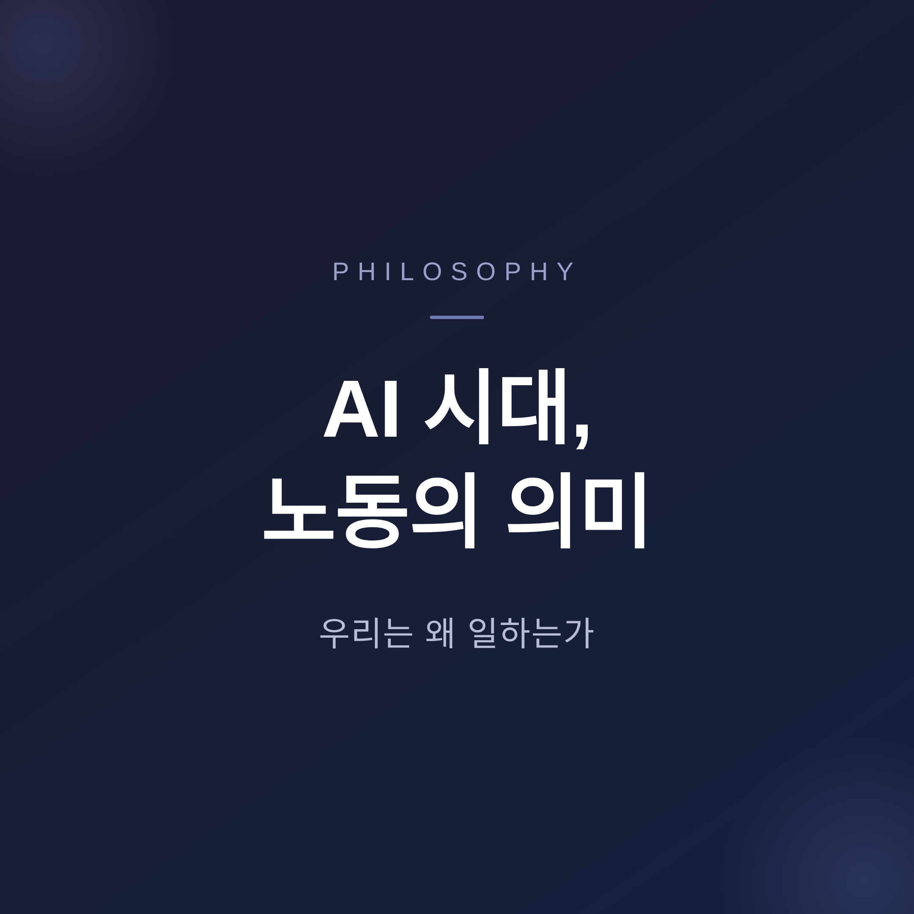
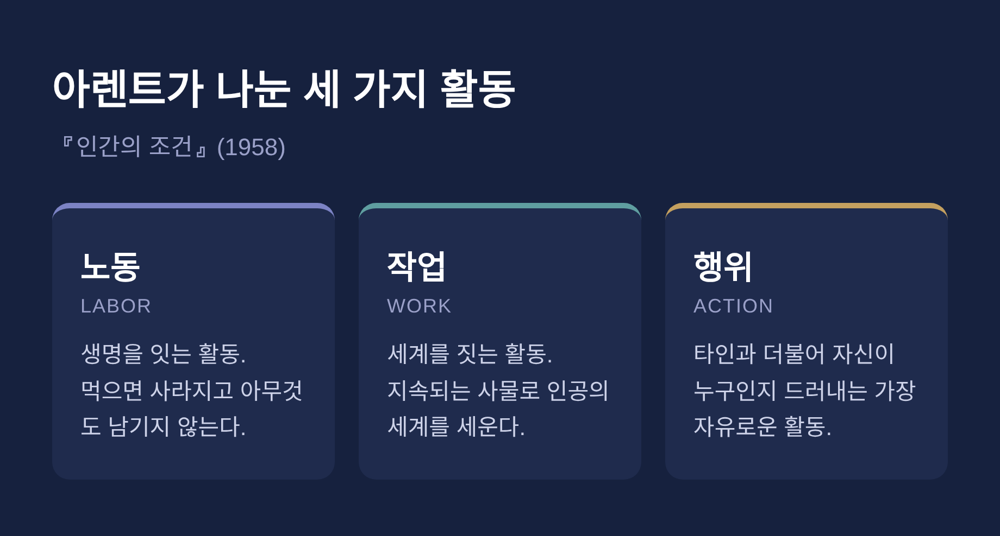
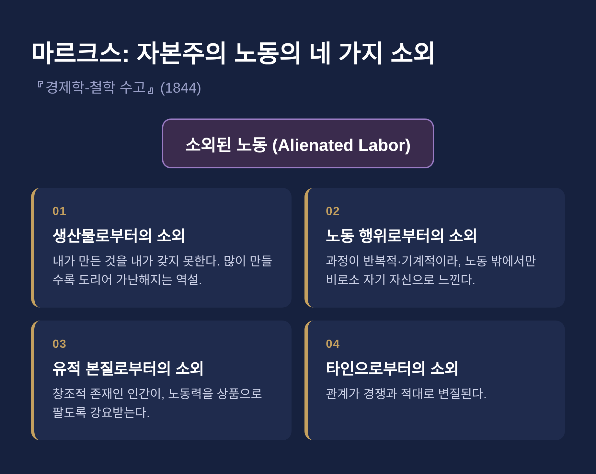
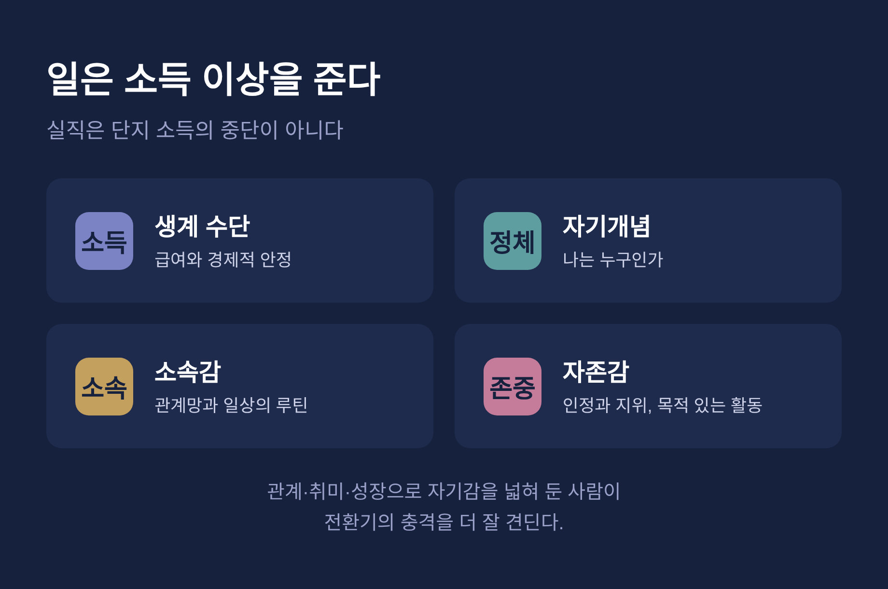

이번 글에서는 AI가 일을 대신하는 시대에 노동의 의미가 무엇인지 정리해 보겠습니다. 일이 사라지면 우리는 자유로워지는 것인지, 아니면 무언가를 함께 잃는 것인지 생각해 보려 합니다. 오래된 철학의 답들과 최근의 노동 시장 변화를 나란히 놓고 살펴보겠습니다.
세 줄 요약
- 일은 생계 수단을 넘어 정체성과 자존감, 소속의 원천입니다.
- AI는 육체노동이 아니라 인지 노동을 자동화하므로, 전문직까지 질문의 대상이 됩니다.
- 핵심은 일이 줄어든 자리에 무엇을 채울 것인가입니다.

질문 자체는 새롭지 않습니다. 인간은 오래전부터 "왜 일하는가"를 물어 왔습니다.
다만 지금은 질문의 무게가 달라졌습니다. 예전의 자동화는 공장과 반복 작업, 곧 육체노동을 겨냥했습니다. 지금의 AI는 인지(cognitive) 노동을 자동화합니다.
법률, 의료, 소프트웨어 같은 고임금 지식 노동도 예외가 아닙니다. 맥킨지는 현재 업무 활동의 30~50%가 산업과 지역에 따라 자동화될 수 있다고 봅니다. 같은 보고서는 생성형 AI가 직원 업무 시간의 최대 70%를 흡수하는 활동을 자동화할 수 있다고 추정합니다.
화이트칼라까지 흔들린다는 것 — 이것이 과거의 자동화 논의와 다른 점입니다.
한나 아렌트는 『인간의 조건』(1958)에서 인간의 활동을 셋으로 나눕니다. 노동(Labor), 작업(Work), 행위(Action)입니다.
노동은 생명 자체에 결부된 활동입니다. 먹기 위해 요리하고, 먹으면 사라집니다. 노동의 특징은 아무것도 남기지 않는다는 데 있습니다.
작업은 세계를 짓는 활동입니다. 건축이나 글쓰기처럼 지속되는 사물을 만들어, 인간이 살아갈 인공의 세계를 세웁니다.
행위는 타인과 더불어 자신이 누구인지를 드러내는 활동입니다. 아렌트는 이를 인간 활동 중 가장 자유롭고 높은 표현으로 보았습니다.
흥미로운 대목은 그다음입니다. 아렌트는 자동화가 인간을 생계 노동에서 해방할 수 있다고 보면서도, 한 가지를 경고했습니다. 모든 것을 '노동'의 눈으로만 보게 된 사회는, 정작 노동에서 풀려났을 때 무엇을 해야 할지 모른다는 것입니다.
"생산성이 의미를 대체할지도 모른다." 그가 던진 우려를 이렇게 압축할 수 있겠습니다.

마르크스는 다른 각도에서 묻습니다. 일이 본래 자기실현의 활동이라면, 왜 그토록 괴로운가.
『경제학-철학 수고』(1844)에서 그는 자본주의 노동의 네 가지 소외를 말합니다.
여기서 AI 시대의 두 갈래 해석이 갈립니다. AI가 소외된 반복 노동을 대신하면, 인간은 그 고통에서 풀려날 수 있습니다. 그러나 알고리즘에 관리되는 노동 아래에서는 소외가 오히려 깊어질 수도 있습니다.
해방의 길과 새로운 예속의 길이 같은 기술 안에 함께 들어 있는 셈입니다.

막스 베버는 『프로테스탄트 윤리와 자본주의 정신』에서 한 가지 기원을 추적합니다.
칼뱅의 예정설에 따르면, 누가 구원받을지는 이미 정해져 있고 인간은 그것을 알 수 없습니다. 이 교리는 "나는 구원받았는가"라는 견딜 수 없는 불안을 남겼습니다.
신자들은 그 단서를 세속의 직업적 성공에서 찾으려 했습니다. 끊임없이 일하되 그 결실은 누리지 않고 절제하는 태도가 윤리가 되었습니다. 그렇게 종교적 동기에서 출발한 노동 윤리가, 뿌리가 사라진 뒤에도 세속화되어 남았습니다.
다만 베버의 주장은 하나의 영향력 있는 해석으로 받아들이는 편이 안전합니다. 학계에서 비판과 수정이 많은 고전이기 때문입니다.
여기서 얻는 통찰은 분명합니다. '일 = 도덕적 가치이자 자존감'이라는 우리의 감각은 자연법칙이 아닙니다. 특정 종교와 역사가 만든 산물입니다.
예전엔 그것을 당연하게 여겼습니다. 지금은 AI 앞에서 그 당연함이 흔들리고 있습니다.
일이 사라지면 무엇이 사라지는가. 심리·사회 연구는 이 물음에 비교적 일관된 답을 내놓습니다.
일은 급여만 주지 않습니다. 인정과 지위, 소속감, 자존감, 그리고 '나는 누구인가'라는 자기개념을 함께 줍니다.
의미 있다고 느끼는 일은 몰입과 심리적 웰빙을 높이고, 번아웃을 막는 완충 역할을 합니다. 반대로 실직한 이들에게서는 우울과 불안, 자존감 저하가 일관되게 높게 나타납니다.
실직은 단지 소득의 중단이 아닙니다. 전문적 정체성, 일상의 루틴, 목적 있는 활동, 직장에서 맺은 관계망의 상실이기도 합니다.
다만 여기에는 아쉬운 면도 함께 있습니다. 직업과 자신을 지나치게 동일시하면, 은퇴나 실직 같은 전환기에 오히려 더 크게 흔들립니다. 관계와 취미, 봉사, 개인적 성장으로 자기감을 넓혀 둔 사람이 그 충격을 더 잘 견딥니다.

일을 줄이자는 생각은 새로운 것이 아닙니다.
케인스는 1930년에 100년 뒤면 사람들이 주 15시간만 일하면 될 것이라 예측했습니다. 버트런드 러셀은 하루 4시간 노동이면 충분하다고 보았습니다.
예측은 빗나갔습니다. 노동시간이 줄긴 했으나, 여전히 풀타임 노동이 사회의 규범으로 남아 있습니다. 케인스가 그린 미래에는 일을 둘러싼 사회적 기대와 불안까지 바뀌어야 했는데, 그것은 여러 세대가 걸릴 일이었습니다.
AI 시대에 다시 떠오른 논의가 기본소득(UBI)입니다.
찬성하는 쪽은 이렇게 말합니다. AI가 만든 고용 불안과 불평등에 대응할 새 분배 장치가 필요하다고. 나아가 인간을 돌봄과 예술, 공동체 형성처럼 시장이 평가하지 않는 활동으로 해방할 수 있다고. 실제로 지난 40년간 160건이 넘는 기본소득 실험이 진행되었고, 대체로 긍정적 효과가 보고되었습니다.
우려하는 쪽도 분명합니다. 막대한 재정 부담과 노동 유인에 미칠 영향이 문제입니다. 무엇보다 실직의 비금전적 상처 — 목적과 사회적 연결의 상실 — 는 돈만으로 메워지지 않습니다.
기본소득은 생계를 받쳐 줄 수는 있어도, 의미까지 자동으로 채워 주지는 못합니다.
AI가 일자리에 미칠 영향은 기관마다 추정이 크게 엇갈립니다.
| 기관 | 추정 |
|---|---|
| 골드만삭스 | 전 세계 최대 약 3억 개 풀타임 일자리가 영향 가능 |
| 맥킨지 | 현재 업무 활동의 30~50% 자동화 가능 |
| 세계경제포럼 | 2030년까지 9,200만 개 소멸·1억 7,000만 개 창출, 순 7,800만 개 증가 전망 |
같은 세계경제포럼도 이전 판본에서는 2027년까지 순 1,400만 개 감소를 전망한 바 있습니다. 판본과 기준 연도에 따라 방향이 달라지는 셈입니다.
그래서 어느 한 숫자를 운명처럼 받아들일 필요는 없습니다. 지금 확인되는 단기 양상은 오히려 조용합니다. 대량 해고보다 신규 채용 억제로 작동하고 있고, AI 노출도가 높은 직종의 20~30대 실업률이 2025년 초 이후 약 3%포인트 올랐습니다.
문이 닫히는 것이 아니라, 새로 들어설 문이 천천히 좁아지고 있는 모습입니다.
끝으로 한 마디만 더 드리겠습니다.
세 철학자는 결국 한 가지를 함께 가리킵니다. 일은 생계의 수단이기도 하지만, 동시에 우리가 누구인지를 빚는 활동이라는 것입니다.
AI가 노동을 덜어 주는 만큼, 우리에게 남는 질문은 오히려 커집니다. 줄어든 일의 자리에 무엇을 채울 것인가.
"일이 사라진다 해도, 의미를 향한 갈망은 사라지지 않습니다."
그러니 자유로워질 것이냐 잃어버릴 것이냐고 물으신다면, 답은 우리가 그 빈자리를 어떻게 채우느냐에 달려 있다고 말씀드리겠습니다.